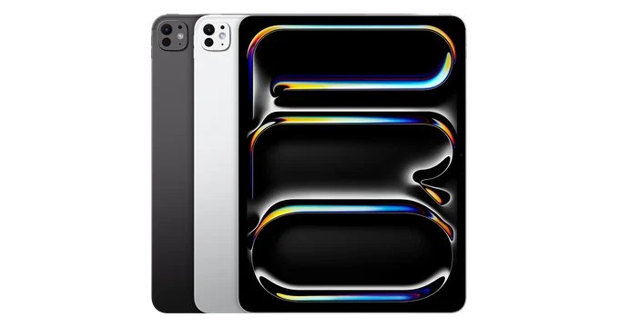

Tablet Repairs
iPad Repairs Brisbane

Book iPad repairs in Brisbane for cracked screens, touch faults, battery problems, USB-C or Lightning charging issues, camera faults and water damage checks.
TECHM8 helps customers searching by iPad fault or by Apple tablet model, including iPad Pro, iPad Air, iPad mini and standard iPad devices. Stores include Park Ridge, Fairfield, Toowong, North Lakes and Brassall.
iPad repair services available at TECHM8
- iPad screen replacement, touch screen repair, digitizer repair and display replacement.
- iPad battery replacement, no-power checks, overheating diagnosis and swelling assessment.
- iPad USB-C port repair, Lightning port repair, charging dock repair and no-charge diagnosis.
- iPad camera repair, front camera checks, rear camera checks and camera lens inspection.
- iPad housing checks, bent frame inspection, power button, volume button, home button and audio fault support.
- iPad water damage assessment, board-level symptoms, Wi-Fi issues, boot loops and general diagnostics.
iPad models we can assess and repair
iPad Pro
iPad Pro 13-inch (M5), iPad Pro 11-inch (M5), iPad Pro 13-inch (M4), iPad Pro 11-inch (M4), iPad Pro 12.9-inch (6th generation), iPad Pro 11-inch (4th generation), iPad Pro 12.9-inch (5th generation), iPad Pro 11-inch (3rd generation), iPad Pro 12.9-inch (4th generation), iPad Pro 11-inch (2nd generation), iPad Pro 12.9-inch (3rd generation), iPad Pro 11-inch, iPad Pro 12.9-inch (2nd generation), iPad Pro (10.5-inch), iPad Pro (9.7-inch), iPad Pro (12.9-inch).
iPad Air
iPad Air 13-inch (M4), iPad Air 11-inch (M4), iPad Air 13-inch (M3), iPad Air 11-inch (M3), iPad Air 13-inch (M2), iPad Air 11-inch (M2), iPad Air (5th generation), iPad Air (4th generation), iPad Air (3rd generation), iPad Air 2 and iPad Air.
iPad mini
iPad mini (A17 Pro), iPad mini (6th generation), iPad mini (5th generation), iPad mini 4, iPad mini 3, iPad mini 2 and iPad mini.
iPad
iPad (A16), iPad (10th generation), iPad (9th generation), iPad (8th generation), iPad (7th generation), iPad (6th generation), iPad (5th generation), iPad (4th generation), iPad (3rd generation), iPad 2 and iPad.
iPad repair FAQs
What iPad repairs does TECHM8 offer?
TECHM8 can assess screen replacement, touch faults, battery replacement, charging port repair, camera faults, audio faults, button issues, housing damage and water damage checks.
Can TECHM8 repair all iPad model families?
TECHM8 can assess iPad Pro, iPad Air, iPad mini and standard iPad models. Parts availability depends on the exact model, generation, colour and fault.
Can I book an iPad repair online?
Yes. Use the Book a repair button to submit your device model, fault and contact details, or use Find a store to choose a nearby TECHM8 location.
Will I lose my data during repair?
Most common hardware repairs do not require data removal, but damaged devices always carry risk. Back up your iPad first if possible.